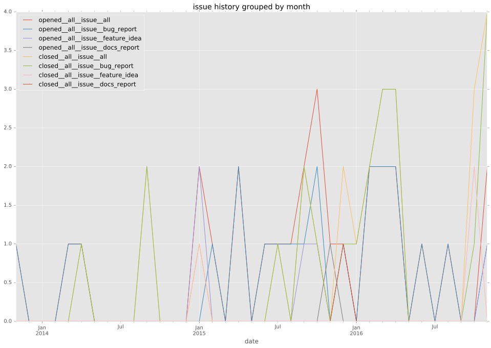
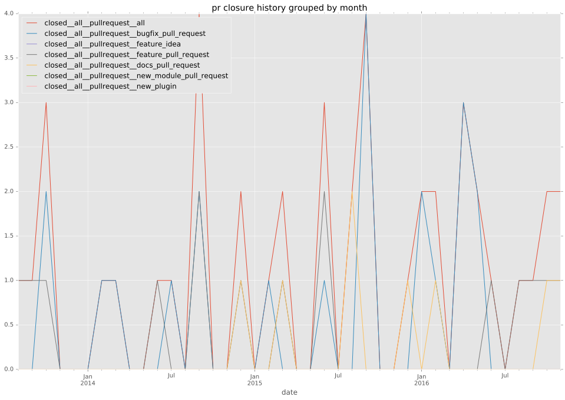
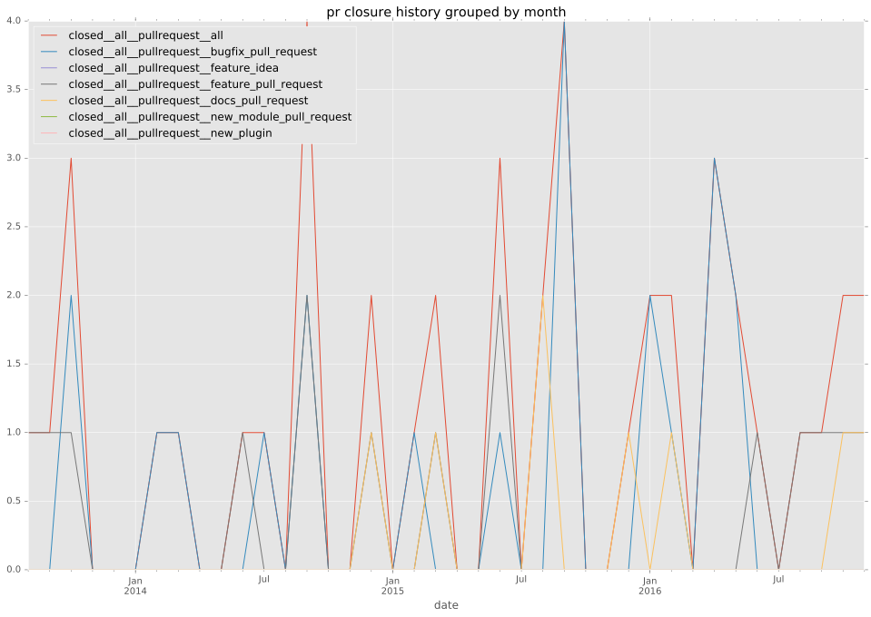

authors
- maxamillion
maintainers
- maxamillion
contributors
- maxamillion : 89 commits
- m0 : 19 commits
- localvoid : 17 commits
- codehopper-uk : 13 commits
- rndmh3ro : 7 commits
- mscherer : 7 commits
- ke3vin : 6 commits
- abadger : 5 commits
- varnav : 2 commits
- resmo : 2 commits
- analogbyte : 2 commits
- ag-wood : 2 commits
- ypid : 1 commits
- jimi-c : 1 commits
- bibliotechy : 1 commits
total issue counts
feature pull request: 15
docs report: 1
pullrequest: 43
docs pull request: 7
bugfix pull request: 21
feature idea: 4
issue: 25
bug report: 20
issue history

pullrequest history
 

days open by issue type
bugfix pull request
count: 34
std: 42.2118099398
min: 0
max: 134
median: 2.0
mean: 25.2647058824
all
count: 88
std: 100.505709274
min: 0
max: 465
median: 5.0
mean: 56.4318181818
pullrequest
count: 0
std: nan
min: nan
max: nan
median: nan
mean: nan
docs pull request
count: 13
std: 46.091603329
min: 0
max: 125
median: 0.0
mean: 21.5384615385
docs report
count: 1
std: nan
min: 9
max: 9
median: 9.0
mean: 9.0
feature pull request
count: 20
std: 115.665340758
min: 0
max: 465
median: 11.0
mean: 62.95
feature idea
count: 3
std: 216.453998192
min: 9
max: 406
median: 357.0
mean: 257.333333333
issue
count: 0
std: nan
min: nan
max: nan
median: nan
mean: nan
bug report
count: 17
std: 120.752268277
min: 0
max: 327
median: 24.0
mean: 105.117647059
closures grouped by total days open